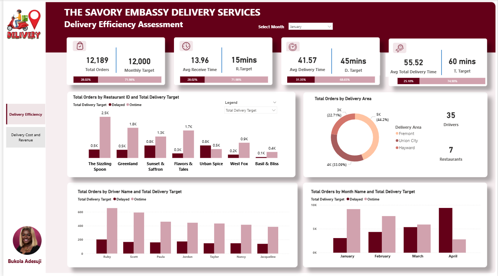
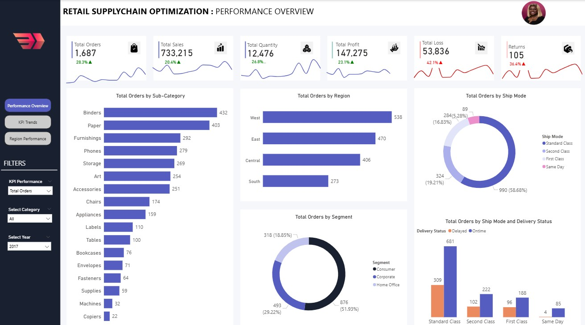
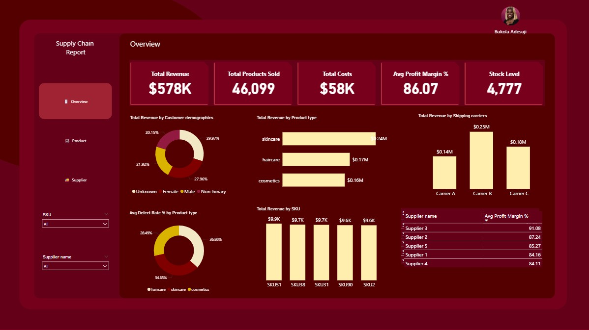
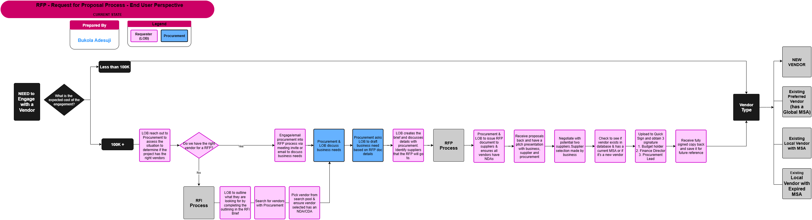
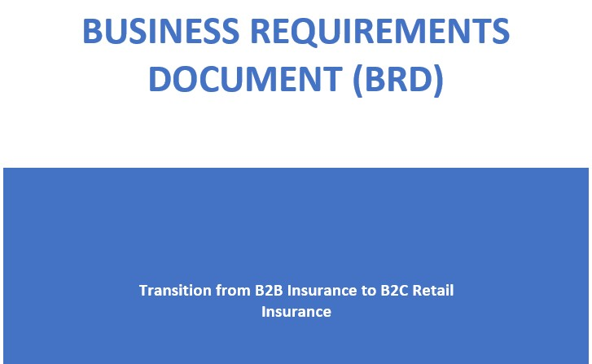
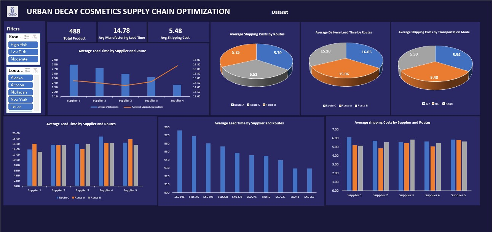
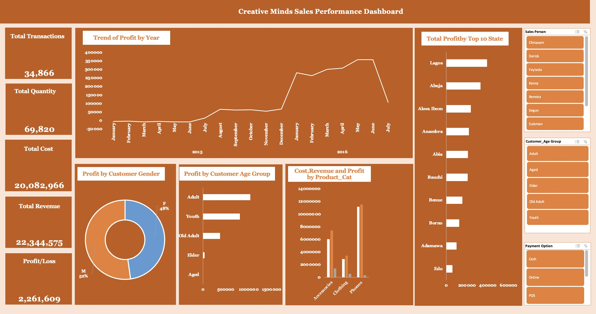
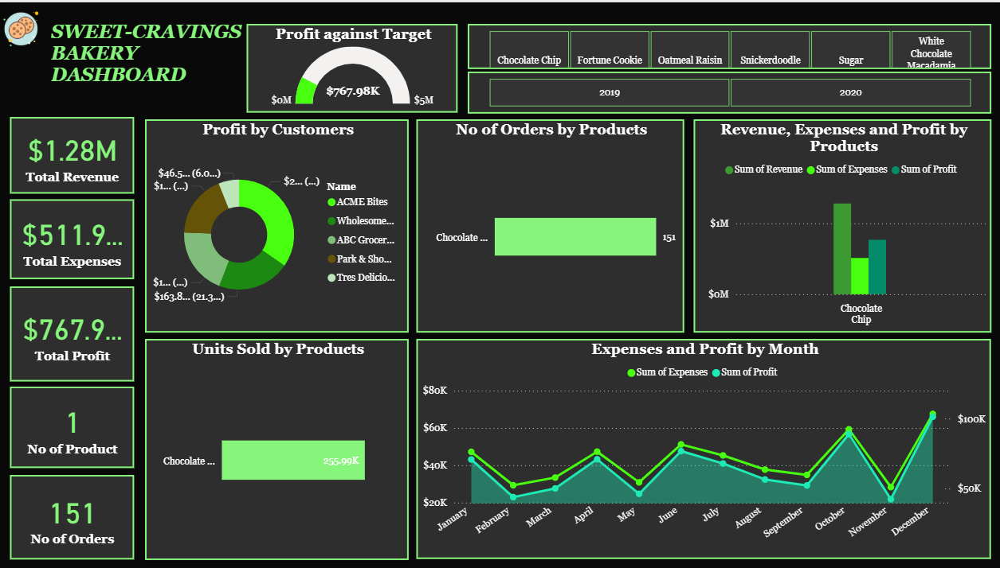

MEET BUKOLA...
A Certified IT Business Analyst & Supply Chain Specialist proficient in using Jira, Visio, MS Excel, PowerBI, SQL, ERP, SAP
Strategic and Result-driven IT Business Analyst & Supply Chain Professional who turns messy processes into smooth workflows. With years of experience across different sectors, I have mastered tools like ERP, SAP, MS Excel, Power BI, SQL, JIRA, and Confluence driving process improvements, decoding stakeholders wishlists, and delivering end-to-end SDLC projects using Agile and Waterfall solutions that actually work (and do not break by Monday).
I have rolled up my sleeves on projects involving ERP implementation (SAP, Microsoft Dynamics), workflow automation, process improvement, and data visualization using Excel, Power BI and SQL. On the supply chain side, I have fine-tuned demand forecasting, procurement strategies, inventory optimization, and logistics because I believe a smooth supply chain is like good coffee: it keeps everything running.
When I am not analyzing data, streamlining workflows or negotiating supplier contracts, you will probably find me decoding process maps, exploring new technologies like they are treasure maps or explaining complex systems in plain English. My mission is simple: help organizations work smarter, cut the clutter, and achieve measurable results
Let's connect and see how I can help your business thrive!
Signature Skills
- Business Analysis: Requirements gathering, process mapping, gap analysis, Agile/Scrum facilitation, UAT execution
- Data Analytics & Visualization: Creating insights & building user-friendly dashboards that make sense
- Process Improvement and Delivery Execution: Streamlines processes to save time and money using BPMN, UAT and RCA
- Stakeholder Engagement and communication: Communicates effectively with both techies and non-techies
- Supply Chain Management: Demand forecasting, inventory optimization, procurement strategy, logistics improvement
- Strategy & Leadership: KPI development, team leadership, contract negotiations, continuous improvement (Lean, Six Sigma)
Supply Chain Management Projects
Integer eu ante ornare amet commetus vestibulum blandit integer in curae ac faucibus integer non. Adipiscing cubilia elementum integer. Integer eu ante ornare amet commetus.

Food Delivery Services Efficiency, Delivery cost and Revenue Assessment With PowerBi
This project analyzes the delivery operations of a multi-restaurant food delivery service across Fremont, Union City, and Hayward. Using Power BI dashboards and detailed order-level data.
Explore Report
README

Retail Supply Chain Optimization Performance Overview
Integer eu ante ornare amet commetus vestibulum blandit integer in curae ac faucibus integer adipiscing ornare amet.
Explore Report
README

Supply Chain Analysis Report Using Power BI
This project analyzes Urban Decay’s supply chain performance using Power BI and Excel to uncover insights on revenue, product quality, supplier efficiency, and logistics risks.The analysis applies data storytelling to present findings and provides actionable recommendations for improving profitability, reducing risks, and enhancing supply chain resilience.
.
Explore Report
README
Business Intelligence Projects
Integer eu ante ornare amet commetus vestibulum blandit integer in curae ac faucibus integer non. Adipiscing cubilia elementum integer. Integer eu ante ornare amet commetus.

Middle and High Level Process Mapping using Draw.io
This project showcases Business Analysis in practice by mapping real-world Supply Chain workflows. It features mid-level RFP and high-level O2C process maps that highlight stakeholder alignment, compliance, and opportunities for improvement.
Explore Report
README

Business Requirements Document (BRD)
Integer eu ante ornare amet commetus vestibulum blandit integer in curae ac faucibus integer adipiscing ornare amet.
Explore Report
README

Urban Decay Cosmetics Supply Chain Optimization
This project contains data analysis, visualizations, and insights using excel from a supply chain optimization project for Urban Decay’s beauty product line. It explores supplier performance, shipping cost vs. speed trade-offs, stockout risks, and revenue concentration across locations.
Explore Report
README

Sales Performance Dashboard using Excel
Integer eu ante ornare amet commetus vestibulum blandit integer in curae ac faucibus integer adipiscing ornare amet.
Explore Report
README

Sales Performance Dashboard using PowerBI
Integer eu ante ornare amet commetus vestibulum blandit integer in curae ac faucibus integer adipiscing ornare amet.
Explore Report
README

Social Media Performance Report using Power BI
Integer eu ante ornare amet commetus vestibulum blandit integer in curae ac faucibus integer adipiscing ornare amet.
Explore Report
README
IT & Digital Transformation Projects
Integer eu ante ornare amet commetus vestibulum blandit integer in curae ac faucibus integer non. Adipiscing cubilia elementum integer. Integer eu ante ornare amet commetus.
.jpg)
Possibly broke spacetime
Integer eu ante ornare amet commetus vestibulum blandit integer in curae ac faucibus integer adipiscing ornare amet.
Explore Report
README

Terraformed a small moon
Integer eu ante ornare amet commetus vestibulum blandit integer in curae ac faucibus integer adipiscing ornare amet.
Explore Report
README

Snapped dark matter in the wild
Integer eu ante ornare amet commetus vestibulum blandit integer in curae ac faucibus integer adipiscing ornare amet.
Explore Report
README